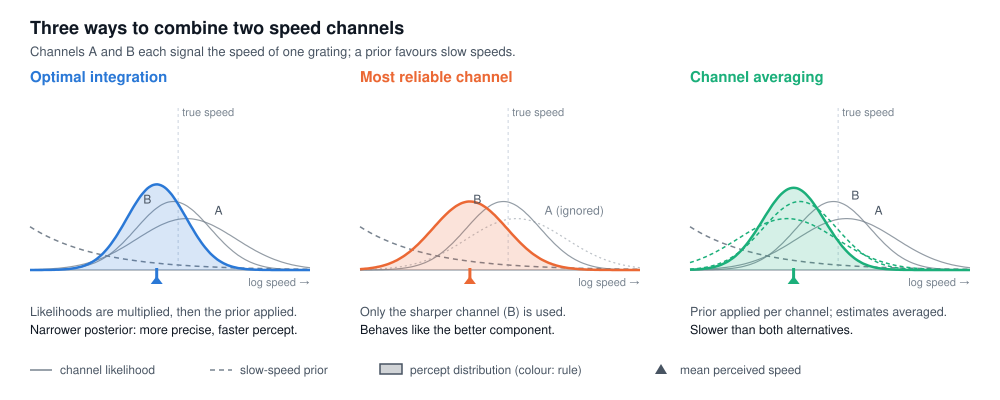

What we found
Four observers judged the speed of gratings drifting at 3°/s whose energy was confined to one of four spatiotemporal frequency channels (0.5, 1, 2 and 4 c/°), or spread over two, three or all four of them: 13 conditions and 2600 trials per observer. Two regularities stood out. Discrimination thresholds fell as more channels were driven, and stimuli driving more channels appeared faster; the inverse relation between uncertainty and perceived speed is the signature of a Bayesian observer with a prior for slow speeds.
We fitted each observer’s single-channel data and predicted the multi-channel conditions, about 40% of all trials, without adjusting any parameter. Optimal integration predicted both thresholds and matching speeds best in every observer, and for the average observer its predictions came close to the likelihood of descriptive fits to each condition. Relying on the most reliable channel underestimated the gain in precision and the increase in perceived speed; averaging channel estimates matched the gain in precision but predicted compound stimuli that appear too slow.
The comparison also places the prior: it enters only after the channel signals have been combined. Because speed-tuned neurons are first common in area MT, this suggests that prior expectations act downstream of the stage at which spatiotemporal channels are integrated.
Try it yourself
The experiment below is a two-channel version of the study. Your responses to single-channel gratings are used to fit the observer, which then predicts, under each integration rule, how you perceive the compound grating. The simulated observer shows how reliably a single session separates the rules.
Before you start
Sit about 57 cm from the screen in a dim room and keep your eyes on the central dot. Two drifting gratings appear briefly, one on each side; a white square then marks one of them. Report whether the marked grating moved faster or slower than the other. The session has three runs of about four minutes, separated by breaks.
Stimulus settings
Gratings are band-limited noise (bandwidth 0.04 ωs) drifting at 3°/s in a 4° raised-cosine aperture at 6° eccentricity, shown for 600 ms. Test gratings drive channel A, channel B or both; the default frequencies and contrasts (1 c/° at 9%, 2 c/° at 13%) are those of our original calibration. Higher frequencies need much more contrast at this eccentricity (4 c/° needed 45%), and on a 60 Hz display reference speeds are capped to avoid temporal aliasing. The reference is broadband (octave bands from 0.5 c/° up to the higher test frequency, as our ABCD stimulus) at high contrast; the more reliable it is, the better it constrains the prior. The two test channels should be about equally reliable, as after our original calibration. Contrast is nominal, as the display is not gamma-corrected.
The stimulus appears here.
Your data
Finished sessions are saved automatically and can also be downloaded.
Which model predicts best, across 50 simulated sessions
Results
Run a session or simulate one to see the analysis.
Psychometric functions
How the demo works
We represent speed in the normalised logarithmic space s = log(1 + v/s0), with s0 = 0.3°/s. Each channel X provides a measurement with a Gaussian likelihood of width σX, and the prior is locally a power law, log p(s) = as + b. The three observers differ only in how they combine the channels.
The probability that the reference is seen as faster is Φ((E[ŝref] − E[ŝtest]) / √(Varref + Vartest)). The models coincide for single-channel stimuli, so runs 1 and 2 (each channel against itself and against the reference, and the reference against itself) fix σA, σB, σR and a for all of them. Run 3 (the compound against itself and against the reference) is then predicted without further fitting. Optimal integration predicts that the compound is discriminated better than either component and, its likelihood being narrower, appears faster; averaging predicts a slower compound; the most reliable channel predicts that the compound behaves like its better component.
We compare the models by goodness of prediction: the negative log-likelihood of the run-3 responses, scaled between a coin flip (chance) and the empirical response proportions (data). The test always drifts at 3°/s, and reference speeds follow two interleaved staircases per condition (1-up-2-down and 2-up-1-down, step 0.1 log units). Asking about a randomly marked grating, rather than which grating was faster, keeps response bias out of the measurement.
As in the original study, the reference is a broadband stimulus described by its own likelihood width σR, here constrained by an interleaved reference-against-reference condition and fitted jointly with the other parameters. Because the reference is more reliable than either channel, the prior exponent is identifiable even when the channels are equally reliable, which is when the three rules differ most.
The prior exponent is critical for separating optimal integration from the most reliable channel. The latter predicts that the compound behaves like the better channel, which is measured directly, whereas the optimal prediction extrapolates through a(σ² − σR²), so any error in a counts against it. A sharp reference constrains a best, and the analysis reports how often the verdict survives bootstrap refits of runs 1 and 2.
In simulations with the standard session (280 trials) and parameters typical of our original observers (σR ≈ 0.15–0.2), the true rule predicts best in about 45–65% of sessions (33% by chance), and optimal integration is separated from the most reliable channel in 70–90%. With nearly equal channels, the most reliable channel and averaging predict similar speeds and differ mainly in threshold. Longer sessions, or pooling across observers, sharpen the comparison.
A correction to the paper: in Fig. 3b the standard deviation of the balanced psychometric function is labelled σTest/√2; it should read √2·σTest, as the Methods (σ = 0.6/√2) and Fig. 3c imply. The analysis here uses √2·σTest.
Cite
Jogan M, Stocker AA (2015) Signal integration in human visual speed perception. J Neurosci 35(25):9381–9390. doi:10.1523/JNEUROSCI.4801-14.2015
@article{Jogan2015,
author = {Jogan, Matja{\v{z}} and Stocker, Alan A.},
title = {Signal Integration in Human Visual Speed Perception},
journal = {Journal of Neuroscience},
volume = {35},
number = {25},
pages = {9381--9390},
year = {2015},
doi = {10.1523/JNEUROSCI.4801-14.2015}
}